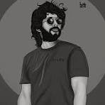

Allu Arjun
| Born | 8 April 1982 (age 42) Madras (now Chennai), Tamil Nadu, India |
| Other names | Arjun, Bunny, Stylish Star, Icon Star |
| Occupations | Actor-Dancer |
| years active | 2001 - present |
| Spouse | Sneha reddy (m.2011) |
| childrens | 2 |
| family | Allu-Konidela |
| Famous Dialogue | "Thaggede le" |
| Best Movie |